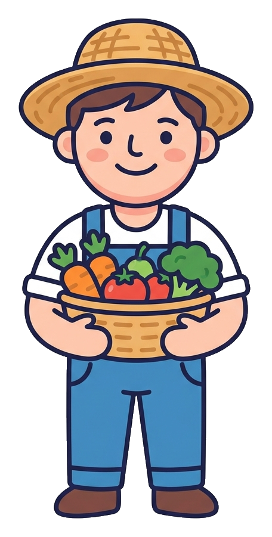
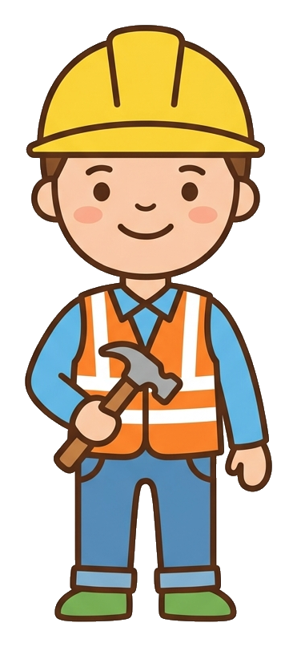

A detective game about jobs, syllables and the tools they use.
A baker, a vet, a postie and more. Clap the syllables, build each word
from its tiles, then match every worker to their tool and their place.
Say each job out loud and clap once for every beat. BA KER is two claps. VET is one. Clapping helps young readers hear the parts of a word before they read it.
Cut out the syllable tiles on each job card along the dashed lines. Push them together in order to make the whole word, then write it in the letter boxes.
Each card shows where the worker goes and one tool they use. Talk about it together. A baker works at a bakery and holds a rolling pin. A vet works at an animal clinic and holds a bandage. Then the big matching page brings all eight together in a mixed up order to solve.
Read it together. For younger detectives, clap and say the words with them and let them slot the tiles. For older ones, hand it over and let them cut, build and match on their own. Praise the effort of sounding a word out, not just getting it right. Laminate the pages and use a dry wipe pen so the mission plays again and again.
BA KER makes BAKER · 2 claps · bakery · rolling pin DOC TOR makes DOCTOR · 2 claps · surgery · stethoscope
FARM ER makes FARMER · 2 claps · farm · tractor TEACH ER makes TEACHER · 2 claps · classroom · book
BUILD ER makes BUILDER · 2 claps · building site · hammer VET makes VET · 1 clap · animal clinic · bandage
CHEF makes CHEF · 1 clap · kitchen · frying pan POST IE makes POSTIE · 2 claps · post office · letters
Match page answers: A to 1 · B to 4 · C to 8 · D to 7 · E to 2 · F to 6 · G to 3 · H to 5.


Loved solving these jobs? Zara has a whole new mission waiting. Grab the free More Jobs edition, a print and play set with a nurse, a firefighter, a hairdresser and a mechanic to clap, build and match. It is our thank you for printing this one.
Made by Guided Childhood, the UK platform helping families raise confident kids in a digital world. If your detective loved this mission, a kind review on Etsy helps another family find it. Thank you.
My colour is gold. Try warm gold and honey for the builder's hat and the farmer's tractor. A baker's hat and a chef's hat love a soft cream. Reds and blues look brilliant on the postie and the letters, and green is lovely for the vet.
Start soft. Press lightly and lay down a gentle layer of colour, then go over it again to build it up richer. Light to strong always looks better than pressing hard straight away, and it never tears the paper.
Colour the big shapes first, like the tops and the hats, then move to the small details like the eyes and the tools. Big to small keeps your page tidy and your hand relaxed.
Follow the bold black outlines and slow down at the edges. If you wander over a line, no worry at all. Real detectives make mistakes and carry on. Your page, your rules.
Colour each worker in as you solve them, or solve first and colour after. Either way works. When every job is bright and every word is built, you have a mission you made your own. Brilliant work, detective.